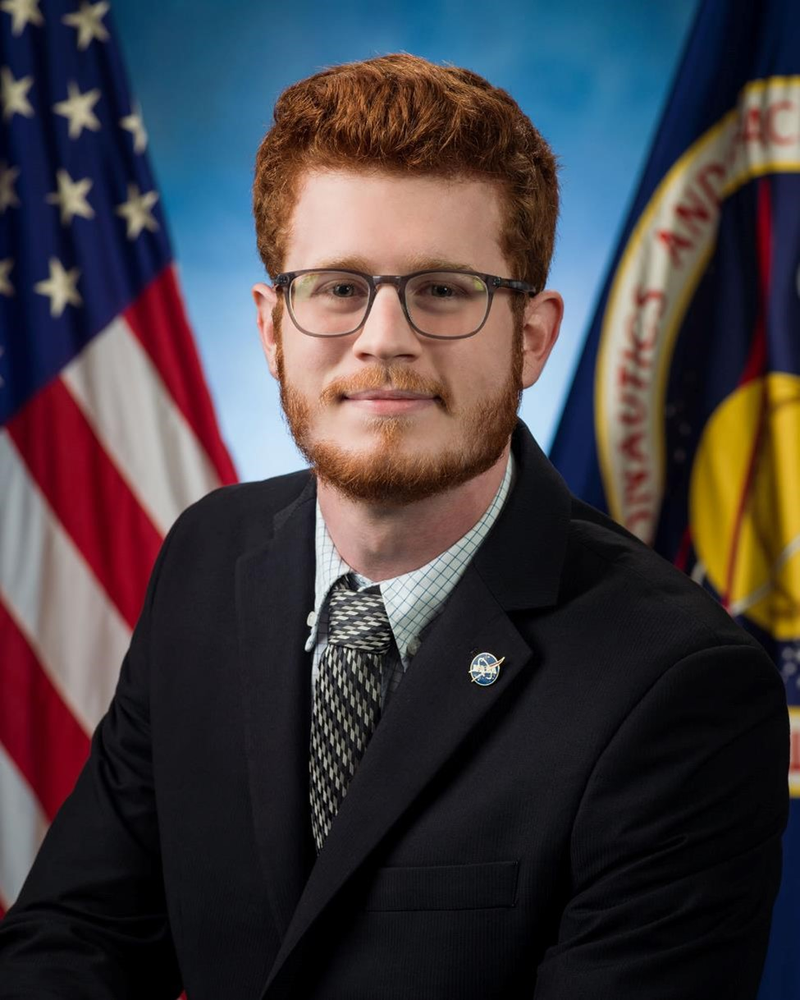

 I am currently a PhD candidate in Aerospace Engineering at the University of Florida (UF) under the advisory of Dr. Norman Fitz-Coy. I hold a Bachelor’s of Science in Mechanical Engineering from the same institution.
During my undergraduate experience, I conducted research on the DebriSat hypervelocity breakup experiment at UF which extended to an internship with the NASA Johnson Space Center. I sought to explain the underlying physics of projectile ballistics via the development of image processing algorithms to extract relevant optical properties of satellite fragments from foam panels. I helped unveil new insights on shape and size statistics of orbital debris items. Additionally, I developed a neural network for anomaly detection of gas turbine engines during an internship with Power Systems Mfg.
Presently, my research interests center around astronautical engineering and reinforcement learning. More specifically, it involves designing reinforcement learning-based controllers for autonomous rendezvous and docking of spacecraft.